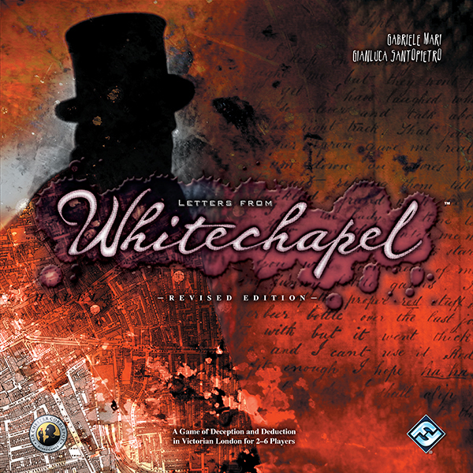

This week Board Crazy reviews Letters from Whitechapel, a game designed by Gabriele Mari and Gianluca Santopietro and published by Fantasy Flight Games. In Letters from Whitechapel, one person plays as the famous serial killer, Jack the Ripper, while the other players take on the roles of the five famous detectives. Check out our reviews of Letters from Whitechapel below!

D reviews Letters from Whitechapel
 (Author’s
note: this review is meant to accompany our gameplay video and will not
go in-depth on the game’s rules. If you’re interested in learning how
the game is played, please watch the video. It’s not bad.)
(Author’s
note: this review is meant to accompany our gameplay video and will not
go in-depth on the game’s rules. If you’re interested in learning how
the game is played, please watch the video. It’s not bad.)
Few board games make me as tense as Letters from Whitechapel does whenever I’m playing as Jack the Ripper. That’s mostly a compliment. There is, particularly toward the end of a game, a genuine sense of dread that comes with making every move, as you wonder if this is the turn where your opponents sniff you out. Playing as the police is slightly less stressful and is more about puzzle-solving and using your greater numbers to your advantage. You can move a bit less deliberately and if one or two of your men are out of position, it’s not the end of the world – in fact, it might even help in the long run.
Jack’s track sheet – this is where Jack will make his secret moves. Jack has a maximum of 20 moves to make each night. You record the location of your hideout in the circle at the top.
In other words, Letters from Whitechapel does a really good job of capturing the dynamics of a hunt. Granted, in real-life I’ve only been the target of a manhunt in childhood games of tag and hide-and-go-seek, but I’m pretty confident about that statement and don’t research my claims. In general, Whitechapel is mostly a resounding success, which makes excellent use of its theme and offers compelling gameplay combined with reasonably simple rules. I say “mostly” because I do have some criticisms, however.
For starters, the standard rules of the game – which is what we used for the video – make things considerably more difficult for Jack than the police. This may be ticky-tack, but considering how things played out in real life, I think the game would be slightly better if Jack were even more elusive than he already is. There are optional rules included in the rulebook which give additional abilities to both Jack and the cops, but I can’t help but feel like at least one of them, maybe Jack’s False Clues, should be standard. The basic rules are what people will probably play first, and first impressions are important.
Jack the Ripper’s game piece. This piece it placed on the movement track.
Additionally, the game has a downtime issue with regards to Jack. At least, our games tend to go on for two or more hours, and most of that time is taken up by the police players thinking, deliberating, and making their moves. During this time, the Jack player has to sit and think about their moves, generally taking into account what their opponents are discussing. This can be exciting, but often drags on to the point of being irritating. Also, Jack being seemingly omniscient adds a sort of supernatural twist to the game, so it might even make sense for the Jack player to leave the table and go do something else while the others work, but that would put them at an even greater disadvantage. More realistically, I think the game probably could have included some sort of hourglass or other timekeeping mechanic to prevent the police from taking too long to make their move. This would help it feel more like a chase (which it really is) than a proper investigation.
Still, Letters from Whitechapel is a game that I do not hesitate to recommend to basically all tabletop fans. It offers a somewhat uncommon combination of competitive and cooperative play, which should satisfy most players, and is genuinely fun for all parties involved. The production quality is high, and the use of real photographs and writings of the figures involved really helps with immersion. If anything, the game’s graphic subject matter might turn some people away, but the game wisely does not delve into the gory details of the actual murders. All in all, Whitechapel is a great game that I look forward to going back to many, many times.
D’s Rating: Four Stars out of Five.
Will reviews Letters from Whitechapel
 There’s
a serial killer out there who’s targeting vulnerable prostitutes, and
only a select number of detectives are on the case. The longer they take
to capture Jack the Ripper, the more women will die, so the stakes are
high. None of this sounds fun, does it? Well, if you find a way to
convert this story to a clever but simple board game, then it can be.
Lucky for us, Gabriele Mari and Gianluca Santopietro did just that, and
the end result is one of my favorite games, Letters from Whitechapel.
There’s
a serial killer out there who’s targeting vulnerable prostitutes, and
only a select number of detectives are on the case. The longer they take
to capture Jack the Ripper, the more women will die, so the stakes are
high. None of this sounds fun, does it? Well, if you find a way to
convert this story to a clever but simple board game, then it can be.
Lucky for us, Gabriele Mari and Gianluca Santopietro did just that, and
the end result is one of my favorite games, Letters from Whitechapel.
Frederich Abberline, Inspector for the Metropolitan Police Criminal Investigation Dept.
Conceptually, this board game is rock-solid, especially since its theme is based on actual history. Taking place in the Whitechapel district of London in the year 1888, most of the players perform the roles of the men who investigated the Jack the Ripper murders. Some of these men might be familiar to the historically inclined, such as Frederick Abberline, Edmund Reid, and Sir Charles Warren. The basic thrust of the gameplay is that these policemen are tracing the steps from the murder scenes, hoping to locate and arrest Jack before he sneaks away into his hideout. One player actually plays as Jack the Ripper, and they utilize the numbered circles all over the board to navigate the streets of Whitechapel. There are also black squares at street intersections, and the detectives use these to move around and look for clues. If the players using the police discover enough clues (spots where Jack has been) and have good enough memory, they should be able to deduce where The Ripper is before the end of the game. But if the killer is crafty and plays their cards right, they’ll get away with murder.
The Alley Token – Jack can use an Alley to cross a block of houses, moving from one numbered circle on that block’s perimeter to any other numbered circle on that perimeter.
Surprisingly enough, Letters from Whitechapel is really fair and well balanced. Based on my description of the gameplay, you’d be right to assume that it’s heavily favored toward Jack the Ripper, but in my experience that’s not the case. Yes, Jack’s movements are done in secret, but the policemen know where the murders occur and he can only move one space at a time, unless he utilizes the special movement tokens. Early on, this might favor the killer, but later on when several clues have been revealed, the detectives regain the advantage. I cannot praise the designers enough for figuring out how to formulate the rules so that sessions unfold slowly and equitably. That’s not to say the every session of Letters from Whitechapel plays out the same way – I’ve played games where Jack was captured within the first two rounds. When that happens, players will likely want to start over, or in other words, there’s definitely a replayability factor with this game.
Thinking about it, my only complaint in regards to the gameplay is that playing as Jack can be pretty boring. After all, the only thing that the player using Jack has to think about is the path back to their hideout. I would even go as far as to say that 80-90 percent of any playthrough is the detective players deliberating and making decisions. Taking on the role of Jack the Ripper should be exciting, and escaping the police should feel exhilarating. Unfortunately, most of the time playing as Jack involves sitting back and waiting for all the other players to do something. To fix this, I encourage that if you’re playing as Jack, enforce some sort of time limit on the detectives as a house rule.
Before I wrap up, I want to point out that the board and pieces are all well made, if not a bit bland though. In the end, that doesn’t matter because the gameplay more than makes up for it, even if there are some flaws to it. As I said in the intro, Letters from Whitechapel is clever and simple – learning it is easy but there’s enough there that you can’t help but to feel smart when you win. Tack on the history its based on, and you have a board game that shouldn’t be avoided. I cannot wait for the sequel.
I give it a: A-
Graham reviews Letters from Whitechapel
 I’m
not shy about my love for themes involving deduction, bluffing,
suspense, and mystery. This isn’t just for board games – I find these
themes fascinating across all types of media and entertainment. So it’
no surprise then that Letters from Whitechapel has become one of my
favorite board games.
I’m
not shy about my love for themes involving deduction, bluffing,
suspense, and mystery. This isn’t just for board games – I find these
themes fascinating across all types of media and entertainment. So it’
no surprise then that Letters from Whitechapel has become one of my
favorite board games.
The Coach Token – Jack can use a Coach to move to two adjacent numbered circles in succession on the game board at once, like a double move.
In this game, one person plays as the famous serial killer, Jack the Ripper, while the other players take on the roles of the five famous detectives. Letters from Whitechapel plays out like a game of cat and mouse in which Jack murders and tries to make it back to his hideout before the detectives can find and arrest him. One of the unique mechanics of this game is the hidden movement of Jack the Ripper. The player controlling Jack has a track sheet where they secretly record Jack’s movements while the detectives can search the streets and alleys of London’s Whitechapel district for clues. If they search an area where Jack has been, then Jack lets the detectives know that they have successfully found a clue. The hidden movement mechanic is what provides this game with the deduction, bluffing, suspense, and mystery that I love so much. As a detective, you need to use deduction to figure out where Jack and his hideout are located. This requires a lot of discussion between you and your partners. In fact, this discussion is going to take up most of your game time. On the flip side, Jack is trying to bluff his position, and he can do this by cleverly choosing his next movement or using the special alley and coach tokens. The suspense builds for each side because the detectives might find a clue or catch and arrest Jack, while Jack might safely get back to his hideout. It keeps all parties on their feet at all times.
Another thing I love about Letters from Whitechapel is how both Jack the Ripper and the detectives feel like they are at a disadvantage. As Jack the Ripper, in the beginning of the game it seems pretty easy to escape the detectives and make it back to your hideout safely. As the rounds go on, the game seems to get progressively harder for Jack. The detectives start to narrow down the locations of Jack’s hideout and have a better idea of where they need to position themselves. It’s the opposite feeling when you’re playing as the detectives. Initially, you have no idea where Jack is going and where the hideout is located. However, as you start to find clues, you get a better understanding of where Jack’s hideout is located and what wretched he will murder next. During the end game, the tricky part as the detectives is trying to decide between searching for clues and executing arrests. If you execute an arrest and Jack isn’t at that spot, you walk away with no information and provide Jack with another opportunity to get closer to his hideout. Overall, the game is very well balanced between Jack the Ripper and the detectives. It’s also nice that the designers also included several alternative rules that adjust the difficulty for either side.
George Lusk, Chairman for Whitechapel’s Vigilance Committee. George Lusk is know for receiving the famous “From Hell” letter during the murder investigations.
Finally, the last thing I love about this game is the history they incorporated into it. You get to play as the detectives that were on the case: Frederick Abberline, George Lusk, Edmund Reid, Donald Swanson, and Charles Warren. The map used for the game board is an actual map of London’s Whitechapel district. The game is broken up into four nights (or rounds) – these nights represent the same nights that the murdered women were found. This includes the night of September 30th, 1888, when two women were murdered, which is known as the “double event” in the game. This kind of historical accuracy really adds to the immersive gameplay. I really appreciate all of the thought and work that the designers, Gabriele Mari and Gianluca Santopietro, put into this game.
I know I’m biased because, as I mentioned, I love mystery themes like this, but Letters from Whitechapel does a fantastic job all around. No game has really made me feel quite as immersed as Letters from Whitechapel, and I can honestly say it’s one of my favorite games of all time. I give it two thumbs up.
I am also very excited to play the new game from this series, Whitehall Mystery, which will be released sometime in Q3 2017.
Leave a Reply
You must be logged in to post a comment.